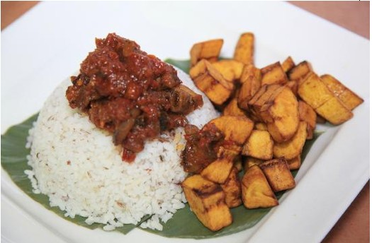
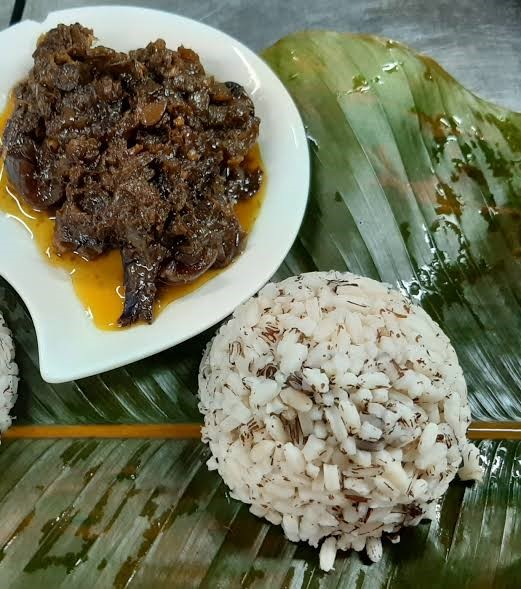
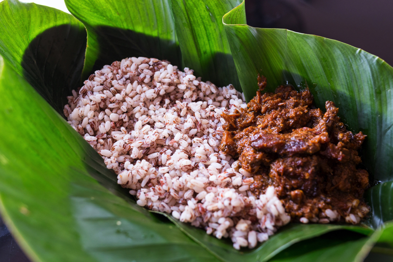
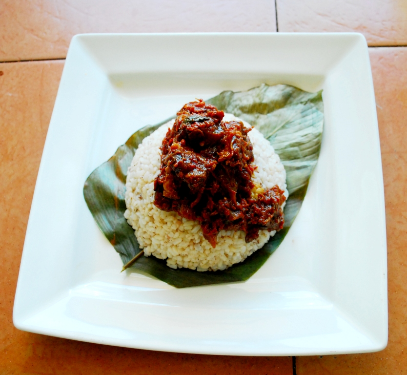

About
| Amount | Ingredients |
|---|---|
| 2 cups | Ofada Rice |
| 4 pieces | Large green bell peppers (chopped) |
| 2 pieces | Large red bell peppers (chopped) |
| 10 pieces | Unripe habenero peppers a.k.a Atarodo (chopped) |
| 1 piece | Red onion (chopped) |
| 1kg | Assorted meat (Goat meat, Shaki, Kponmo, Beef) |
| ~ | Virgin Palm Oil |
| ~ | Seasoning cubes |
| ~ | Salt to taste |
| ~ | Locust beans |
| ~ | Crayfish |